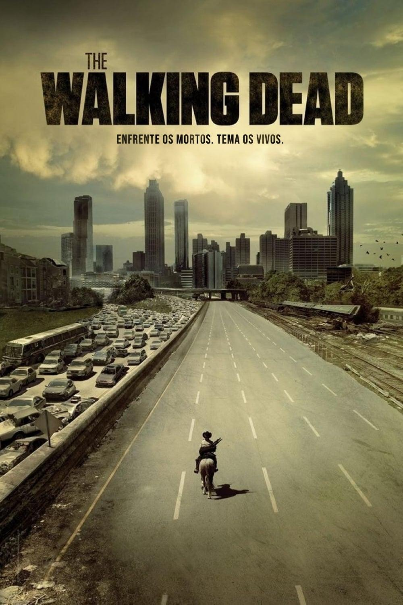

The Walking Dead

Em The Walking Dead, depois de ser baleado e passar meses em coma, o xerife Rick Grimes (Andrew Lincolm) acorda sozinho em um hospital deserto. Para sua surpresa, o mundo como conhecia deixou de existir depois que um perigoso vírus provoca uma infestação de zumbis na cidade de Cynthiana, em Kentucky, nos Estados Unidos. Desesperado, Rick enfrenta a estranha ameaça na expectativa de reencontrar a mulher Lori (Sarah Wayne Callies) e o filho Cal (Chandler Riggs).
Ele decide unir-se aos homens e mulheres sobreviventes para que tenham mais força para combater o fenômeno que os atinge. O grupo percorre diferentes lugares em busca de soluções para o problema. Aos poucos, eles percebem que a infestação de mortos é maior do que pensavam, se espalhando por todo o país, e possivelmente o resto do mundo. A sociedade que conheciam já não existe mais e tudo que resta é o desejo de sobreviver. Em meio ao caos da nova ordem mundial, Rick e seus companheiros percebem que os humanos sobreviventes podem ser uma ameaça maior que os próprios zumbis.
Informações principais
- Gênero: Suspense, drama e terror
- Ano de lançamento: 2010
- Temporadas: 11
- Episódios: 171
- Criadores: Robert Kirkman e Tony Moore
Curiosidades
- Na série, os mortos-vivos nunca fecham os olhos. Para alcançar esse efeito, a equipe de edição remove digitalmente todas as piscadelas acidentais na pós-produção.
- Os atores que fazem papel de figurantes zumbis passam por um treinamento especial para aprender a andar e se mover como um walker. Eles recebem instruções para agir como se estivessem bêbados saindo de um bar
- Para evitar laços e manter o clima de estranhamento em cena, o elenco que interpreta os zumbis não almoça ou confraterniza com os atores principais que fazem os sobreviventes.